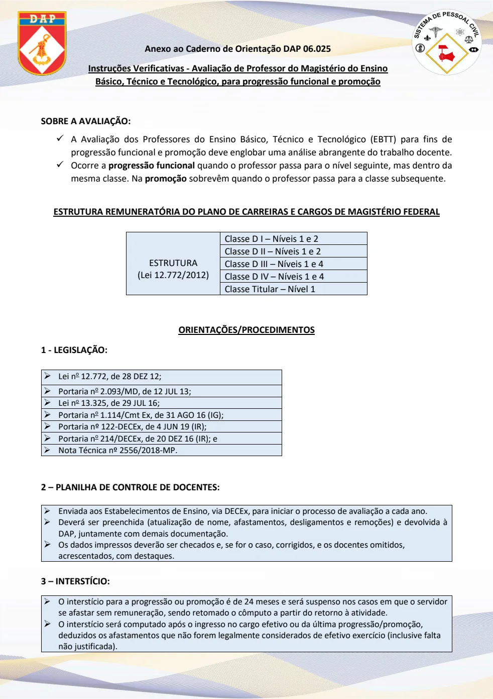
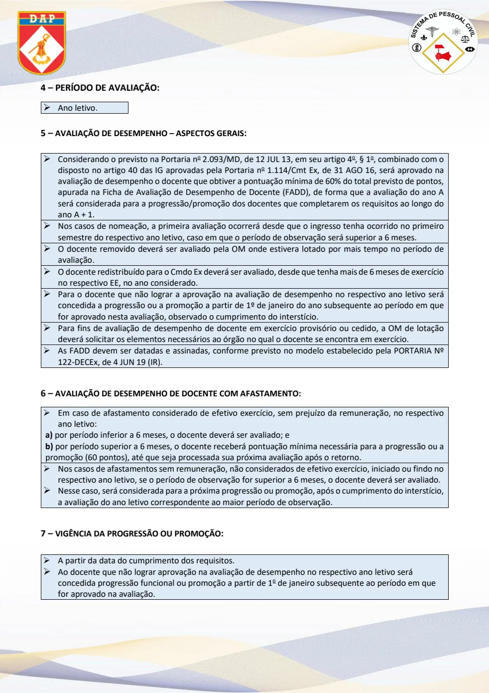
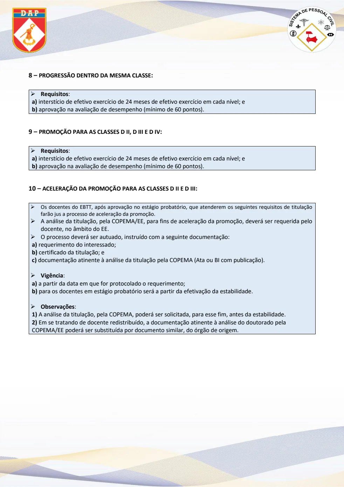
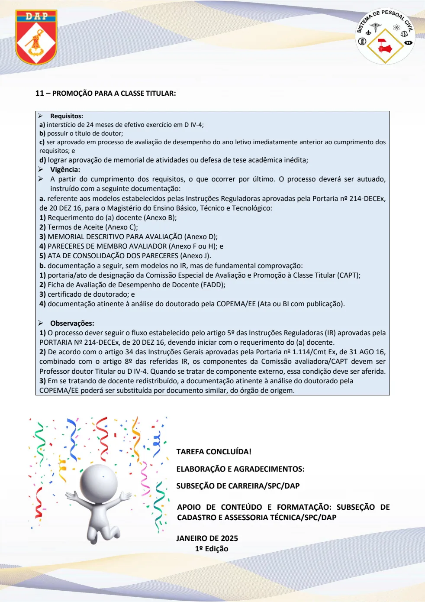

Texto extraído da edição fornecida, sem atualização normativa. Consulte a página original para conferir tabelas, formulários e instruções ilustradas. A numeração dos links corresponde à página do arquivo PDF.
Avaliação, legislação e interstício
PDF · p. 1Anexo ao Caderno de Orientação DAP 06.025
Instruções Verificativas - Avaliação de Professor do Magistério do Ensino
Básico, Técnico e Tecnológico, para progressão funcional e promoção
SOBRE A AVALIAÇÃO:
✓
A Avaliação dos Professores do Ensino Básico, Técni co e Tecnológico (EBTT) para fins de
progressão funcional e promoção deve englobar uma análise abrangente do trabalho docente.
✓ Ocorre a progressão funcional quando o professor passa para o nível seguinte, ma s dentro da
mesma classe. Na promoção sobrevêm quando o professor passa para a classe subsequente.
ESTRUTURA REMUNERATÓRIA DO PLANO DE CARREIRAS E CARGOS DE MAGISTÉRIO FEDERAL
ORIENTAÇÕES/PROCEDIMENTOS
1 - LEGISLAÇÃO:
• Lei n o 12.772, de 28 DEZ 12;
• Portaria n o 2.093/MD, de 12 JUL 13;
• Lei n o 13.325, de 29 JUL 16;
• Portaria n o 1.114/Cmt Ex, de 31 AGO 16 (IG);
• Portaria nº 122-DECEx, de 4 JUN 19 (IR);
• Portaria n o 214/DECEx, de 20 DEZ 16 (IR); e
• Nota Técnica nº 2556/2018 -MP .
2 – PLANILHA DE CONTROLE DE DOCENTES:
3 – INTERSTÍCIO:
ESTRUTURA
(Lei 12.772/2012)
Classe D I – Níveis 1 e 2
Classe D II – Níveis 1 e 2
Classe D III – Níveis 1 e 4
Classe D IV – Níveis 1 e 4
Classe Titular – Nível 1
• Enviada aos Estabelecimentos de Ensino, via DECEx, para iniciar o processo de avaliação a cada ano.
• Deverá ser preenchida (atualização de nome, afastam entos, desligamentos e remoções) e devolvida à
DAP, juntamente com demais documentação.
• Os dados impressos deverão ser checados e, se for o caso, corrigidos, e os docentes omitidos,
acrescentados, com destaques.
• O interstício para a progressão ou promoção é de 24 meses e será suspenso nos casos em que o servidor
se afastar sem remuneração, sendo retomado o cômputo a partir do retorno à atividade.
• O interstício será computado após o ingresso no cargo efetivo ou da última progressão/promoção,
deduzidos os afastamentos que não forem legalmente considerados de efetivo exercício (inclusive falta
não justificada).
Ver página original — tabelas, imagens e diagramas

Período e avaliação de desempenho
PDF · p. 24 – PERÍODO DE AVALIAÇÃO:
5 –
AVALIAÇÃO DE DESEMPENHO – ASPECTOS GERAIS :
• Considerando o previsto na Portaria n o 2.093/MD, de 12 JUL 13, em seu artigo 4 o, § 1 o, combinado com o
disposto no artigo 40 das IG aprovadas pela Portari a n o 1.114/Cmt Ex, de 31 AGO 16, será aprovado na
avaliação de desempenho o docente que obtiver a pontuação mínima de 60% do total previsto de pontos,
apurada na Ficha de Avaliação de Desempenho de Doce nte (FADD), de forma que a avaliação do ano A
será considerada para a progressão/promoção dos docentes que completarem os requisitos ao longo do
ano A + 1.
• Nos casos de nomeação, a primeira avaliação ocorrer á desde que o ingresso tenha ocorrido no primeiro
semestre do respectivo ano letivo, caso em que o período de observação será superior a 6 meses.
• O docente removido deverá ser avaliado pela OM onde estivera lotado por mais tempo no período de
avaliação.
• O docente redistribuído para o Cmdo Ex deverá ser avaliado, desde que tenha mais de 6 meses de exercício
no respectivo EE, no ano considerado.
• Para o docente que não lograr a aprovação na avalia ção de desempenho no respectivo ano letivo será
concedida a progressão ou a promoção a partir de 1º de janeiro do ano subsequente ao período em que
for aprovado nesta avaliação, observado o cumprimento do interstício.
• Para fins de avaliação de desempenho de docente em exercício provisório ou cedido, a OM de lotação
deverá solicitar os elementos necessários ao órgão no qual o docente se encontra em exercício.
• As FADD devem ser datadas e assinadas, conforme pre visto no modelo estabelecido pela PORTARIA Nº
122-DECEx, de 4 JUN 19 (IR).
6 –
AVALIAÇÃO DE DESEMPENHO DE DOCENTE COM AFASTAMENTO:
• Em caso de afastamento considerado de efetivo exercício, sem prejuízo da remuneração, no respecti vo
ano letivo:
a) por período inferior a 6 meses, o docente deverá ser avaliado; e
b) por período superior a 6 meses, o docente receberá pontuação mínima necessária para a progressão ou a
promoção (60 pontos), até que seja processada sua próxima avaliação após o retorno.
• Nos casos de afastamentos sem remuneração, não considerados de efeti vo exercício, iniciado ou findo no
respectivo ano letivo, se o período de observação for superior a 6 meses, o docente deverá ser avaliado.
• Nesse caso, será considerada para a próxima progressão ou promoção, após o cumprimento do interstício,
a avaliação do ano letivo correspondente ao maior período de observação.
7 –
VIGÊNCIA DA PROGRESSÃO OU PROMOÇÃO :
• Ano letivo.
• A partir da data do cumprimento dos requisitos.
• Ao docente que não lograr aprovação na avaliação de desempenho no respectivo ano letivo será
concedida progressão funcional ou promoção a partir de 1 o de janeiro subsequente ao período em que
for aprovado na avaliação.
Ver página original — tabelas, imagens e diagramas

Progressão, promoção e aceleração
PDF · p. 38 –
PROGRESSÃO DENTRO DA MESMA CLASSE :
9 –
PROMOÇÃO PARA AS CLASSES D II, D III E D IV :
10 – ACELERAÇÃO DA PROMOÇÃO PARA AS CLASSES D II E D III:
• Requisitos :
a) interstício de efetivo exercício de 24 meses de efetivo exercício em cada nível; e
b) aprovação na avaliação de desempenho (mínimo de 60 pontos).
• Requisitos :
a) interstício de efetivo exercício de 24 meses de efetivo exercício em cada nível; e
b) aprovação na avaliação de desempenho (mínimo de 60 pontos).
• Os docentes do EBTT, após aprovação no estágio prob atório, que atenderem os seguintes requisitos de ti tulação
farão jus a processo de aceleração da promoção.
• A análise da titulação, pela COPEMA/EE, para fins de aceleração da promoção, deverá ser requerida pelo
docente, no âmbito do EE.
• O processo deverá ser autuado, instruído com a seguinte documentação:
a) requerimento do interessado;
b) certificado da titulação; e
c) documentação atinente à análise da titulação pela COPEMA (Ata ou BI com publicação).
• Vigência :
a) a partir da data em que for protocolado o requerimento;
b) para os docentes em estágio probatório será a partir da efetivação da estabilidade.
• Observações :
1) A análise da titulação, pela COPEMA, poderá ser solicitada, para esse fim, antes da estabilidade.
2) Em se tratando de docente redistribuído, a documentação atinente à análise do doutorado pela
COPEMA/EE poderá ser substituída por documento similar, do órgão de origem.
Ver página original — tabelas, imagens e diagramas

Promoção para a classe titular
PDF · p. 411 –
PROMOÇÃO PARA A CLASSE TITULAR :
TAREFA CONCLUÍDA!
ELABORAÇÃO E AGRADECIMENTOS:
SUBSEÇÃO DE CARREIRA/SPC/DAP
APOIO DE CONTEÚDO E FORMATAÇÃO: SUBSEÇÃO DE
CADASTRO E ASSESSORIA TÉCNICA/SPC/DAP
JANEIRO DE 2025
1º Edição
• Requisitos:
a) interstício de 24 meses de efetivo exercício em D IV-4;
b) possuir o título de doutor;
c) ser aprovado em processo de avaliação de desempenh o do ano letivo imediatamente anterior ao cumprimen to dos
requisitos; e
d) lograr aprovação de memorial de atividades ou defesa de tese acadêmica inédita;
• Vigência:
• A partir do cumprimento dos requisitos, o que ocorr er por último. O processo deverá ser autuado,
instruído com a seguinte documentação:
a. referente aos modelos estabelecidos pelas Instruções Reguladoras aprovadas pela Portaria nº 214-DECEx,
de 20 DEZ 16, para o Magistério do Ensino Básico, Técnico e Tecnológico:
1) Requerimento do (a) docente (Anexo B);
2) Termos de Aceite (Anexo C);
3) MEMORIAL DESCRITIVO PARA AVALIAÇÃO (Anexo D);
4) PARECERES DE MEMBRO AVALIADOR (Anexo F ou H); e
5) ATA DE CONSOLIDAÇÃO DOS PARECERES (Anexo J).
b. documentação a seguir, sem modelos no IR, mas de fundamental comprovação:
1) portaria/ato de designação da Comissão Especial de Avaliação e Promoção à Classe Titular (CAPT);
2) Ficha de Avaliação de Desempenho de Docente (FADD);
3) certificado de doutorado; e
4) documentação atinente à análise do doutorado pela COPEMA/EE (Ata ou BI com publicação).
• Observações:
1) O processo dever seguir o fluxo estabelecido pelo artigo 5º das Instruções Reguladoras (IR) aprovadas pela
PORTARIA Nº 214-DECEx, de 20 DEZ 16, devendo iniciar com o requerimento do (a) docente.
2) De acordo com o artigo 34 das Instruções Gerais ap rovadas pela Portaria no 1.114/Cmt Ex, de 31 AGO 16,
combinado com o artigo 8º das referidas IR, os comp onentes da Comissão avaliadora/CAPT devem ser
Professor doutor Titular ou D IV-4. Quando se tratar de componente externo, essa condição deve ser aferida.
3) Em se tratando de docente redistribuído, a documentação atinente à análise do doutorado pela
COPEMA/EE poderá ser substituída por documento similar, do órgão de origem.
Ver página original — tabelas, imagens e diagramas
